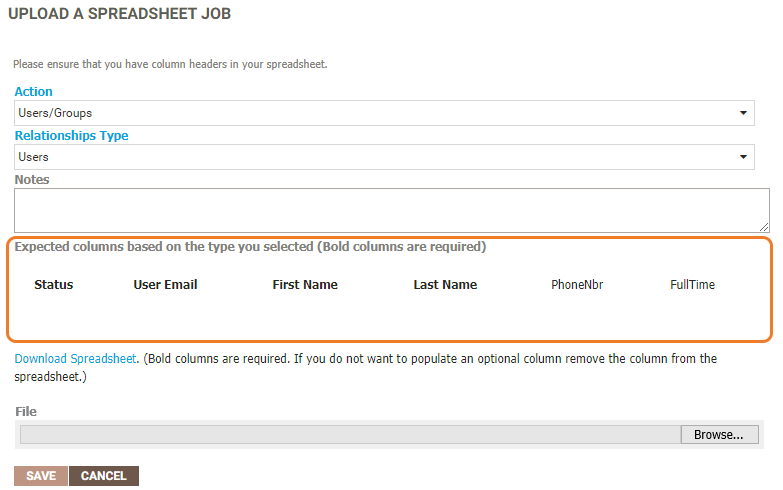
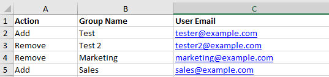
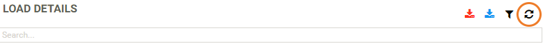
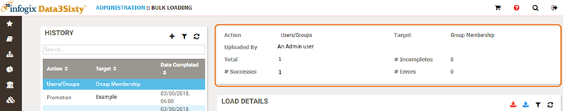
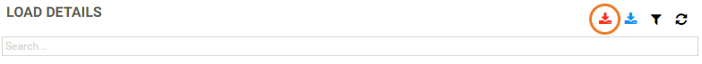
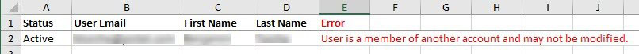

|
|
Bulk loading users and group memberships
As an Admin user, you can add users and group memberships to the system via the Bulk Loader.
Tip: If you are not yet familiar with the concept of Bulk Loading, see the Bulk loading introduction topic.
Preparing the Bulk Load file
- Click the Administration icon on the left of the screen and select Integration > Bulk Loader.
- In the top right corner of the History panel, click the Add button to start a new upload:

The Upload a spreadsheet job panel opens.
- Select Users/Groups from the Action list.
- Select either Group Membership or Users for upload from the Relationships Type list.
Fields that you can populate for upload will be listed under Expected columns based on the type you selected:

Note: Any mandatory columns are shown in bold. Some required fields are system fields, while others may be custom fields created by an administrator for your specific deployment.
-
Generate the upload file. There are two ways to generate an upload file for bulk loading users or group memberships:
- You can create an upload file in Microsoft Excel, using the provided fields as guidance. For each user or group membership to be uploaded, complete the required information then save the spreadsheet.
Note: For users, the valid options for the Status column are Active and Inactive. Enter one of these values for each user. For group memberships, the valid options for the Action column are Add and Remove. Enter one of these values to manage your group memberships via bulk load.
- Or, you can use a system-generated upload file by clicking the Download Spreadsheet link. The application generates a file which you can save to your local desktop. For each user or group membership to be uploaded, complete the required information then save the spreadsheet.
The following example shows a completed group membership spreadsheet that is ready to upload:

- You can create an upload file in Microsoft Excel, using the provided fields as guidance. For each user or group membership to be uploaded, complete the required information then save the spreadsheet.
Uploading the file
Once you have completed the required information and checked for any errors in the bulk load file, upload the file as follows:
- On the Bulk Loading page, from the Upload a spreadsheet job panel, click Browse. (Note, you may see Choose file instead of Browse in some older browsers).
- Navigate to your upload file, select it and click Open on the Windows file navigation window.
- Click Save.
- Monitor the upload progress in the Load Details panel by clicking the Refresh button:

You can also view upload history by clicking the Refresh button in the History panel.
Reviewing the upload results
When your upload is complete, the results display above the Load Details panel, to the right of the History panel:

If there are any errors, you can investigate the details of the failure by clicking the Export Errors to Excel button in the Load Details panel:

When prompted, open the file for viewing. The spreadsheet will show the failed entry along with the specific error, for example:
